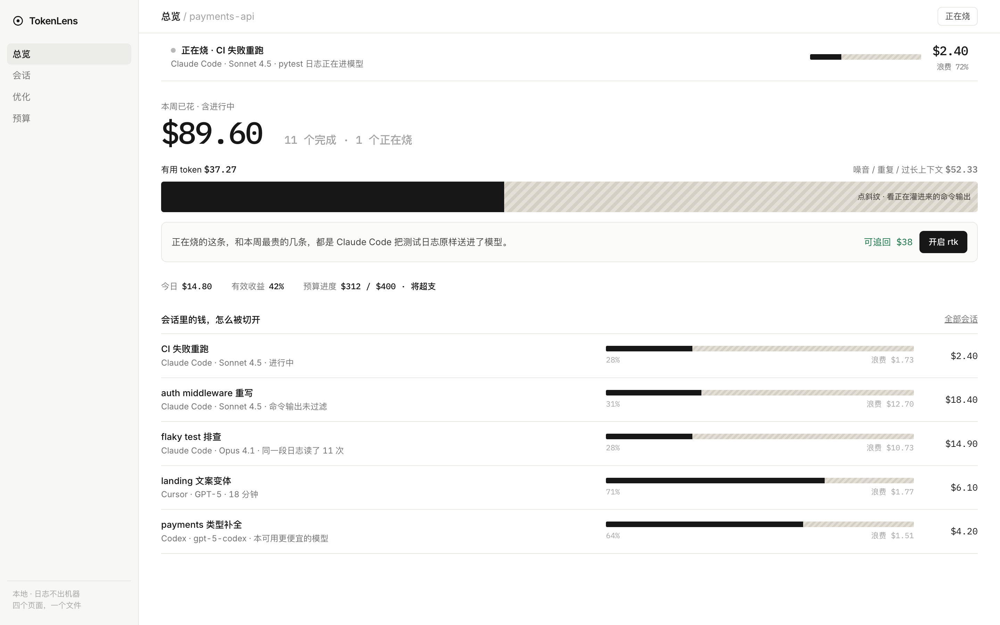

北京交通大学网络空间安全。做安全和 LLM，也把判断做成能打开的产品。最近在想：工具已经很多了，缺的是让人看清、并立刻能动手的那一层。
面向个人开发者的 AI 花费管家。把「看见花了多少」和「一键省下来」接成一条线：正在烧的会话、有用 / 浪费切开、编排 rtk 而不是再造一个压缩引擎。

我是周晓燕，在北京交通大学读网络空间安全，关注大模型。实验室里的工作偏安全与 Agent；TokenLens 是我把同一套判断用在产品上的一次练习——从市场空白、砍范围，到做出可以点的第一屏。
如果你在看作品集：请先打开 TokenLens。报告和仓库是附录。